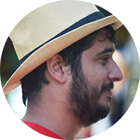
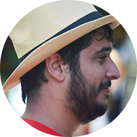

Palestras
8:00 — 8:45
Credenciamento
Algoritmos Clássicos em RubyAssista à Palestra
Alguma vez você já se perguntou como a sua escolha de algoritmo pode impactar a performance do seu app? A notação Big-O realmente importa fora das aulas de Ciência da Computação? Vamos analisar alguns algoritmos base em Ruby e investigar como nossas decisões de implementação podem fazer-ou-quebrar nossas apps!
Desenvolvendo Produtos, não AplicaçõesAssista à Palestra
O mundo Ruby tem sido protagonista de um novo momento do empreendedorismo no mercado de tecnologia. Muitas são as técnicas, novas especificações e convenções que são criadas para facilitar e melhorar o desenvolvimento de aplicativos, principalmente Web. …
Mas esse novo contexto muda completamente a maneira como estávamos acostumados a desenvolver. Atualmente, o papel do desenvolvedor Ruby extrapola a programação, e avança dentro do processo de criação de produto, inovação, e participação efetiva em decisões que podem determinar o sucesso ou a falha de uma aplicação. Nesta palestra, irei demonstrar como é possível expandir o mindset de desenvolvimento de aplicativos para o desenvolvimento de produtos.
Mais
As Novidades do Ruby 2.1Assista à Palestra
Vamos passar pelas principais novidades do Ruby 2.1 e mostrar como as alterações no Garbage Collector tornaram esta versão aproximadamente 20% mais rápida do que a versão anterior.

Projeto Orientado a Domínio & NoSQLAssista à Palestra
Domain Driven Design é um processo de desenvolvimento de software que se concentra em encontrar uma linguagem comum para as partes envolvidas. Esta linguagem e os modelos resultantes são extraídos a partir do domínio e não de detalhes técnicos da implementação. O objetivo é melhorar a comunicação …entre clientes, desenvolvedores e todos os outros grupos envolvidos. Mesmo que o livro de Eric Evan sobre este tópico tenha sido escrito há quase dez anos, este tema continua a ser importante porque vários projetos falham por razões de comunicação.
Bancos de dados relacionais têm sua própria linguagem e influenciam o projeto do software em uma direção mais longe do domínio: entidades têm de ser criadas com o único propósito de aderir às melhores práticas de banco de dados relacional. Dois tipos de bancos de dados NoSQL estão mudando isso: bancos de documentos e bancos de grafo. Em um banco de documentos, você pode modelar uma relação de contenção de uma forma mais natural e, assim, expressar se uma dada entidade pode ou não existir fora da entidade que a contém. Um banco de dados de grafo permite modelar relações entre entidades de uma forma simples, que pode ser expressa na linguagem do domínio.
Eu quero discutir como um banco de dados multi-modelo que combina um armazenamento de documentos e um banco de dados de grafo pode ajudar a modelar os seus problemas de uma forma que seja compreensível para todas as partes envolvidas.
Mais
Particionando a ShopifyAssista à Palestra
Bancos de dados sempre foram um dos nossos primeiros gargalos ao tentar distribuir o Shopify em múltiplos servidores. Atualmente, bancos NoSQL são cada vez mais populares, especialmente porque eles escalam sem precisar de muitos ajustes. Na Shopify, nós decidimos não usar um banco de dados NoSQL como nossa fonte de dados canônica …e, para escalar de forma adequada, tivemos que criar soluções customizadas para particionar nossos dados. Eu falarei sobre como nós fizemos isto usando Ruby e Rails e quando você deve particionar uma grande base de dados.
Mais12:15 — 13:45
Almoço

Arquitetura Distribuída: Escalando Projetos e TimesAssista à Palestra
Há alguns anos, muitas pessoas diziam que Rails não escalava. Atualmente, existem muitas aplicações grandes em Rails que mostram que isso não é verdade. Mas quando seu projeto cresce, até que ponto vale manter tudo numa única aplicação? …Nesta apresentação, vou mostrar detalhes de uma arquitetura distribuída com serviços, apresentando os principais pontos positivos e negativos desta abordagem. Será apresentado como exemplo o caso do projeto Globo.tv (http://globotv.globo.com/), onde utilizamos esta arquitetura para permitir que diferentes times trabalhem juntos.
Mais
Deixando Rails pelo Dropwizard?Assista à Palestra
Devido ao sucesso de Rails, muitas organizações encontram-se com uma aplicação Rails que precisa de particionamento. Muitas delas têm optado por abandonar Ruby em grande parte durante essa transição, mas o raciocínio é muitas vezes reacionário. …
Esta palestra explora a abordagem que o Yammer tem tomado, comparando Rails e Dropwizard, um framework baseado em Java. Ambos têm o mantra de manter a tomada de decisão e a repetição fora do caminho para que você possa se concentrar no que realmente importa. Dropwizard tem uma abordagem um pouco diferente, colocando a ênfase no "pronto para produção desde cedo".
Nesta palestra, os participantes irão obter insights sobre as opções que Rubistas têm para replicar o foco do Dropwizard em operações em Rails. Os participantes também vão sair com uma compreensão de por que o foco do Dropwizard em operações e métricas o torna atraente para as organizações que estão quebrando suas aplicações Rails monolíticas. Ao reunir conjuntos de ferramentas semelhantes para serviços Ruby e Java, estaremos em uma melhor posição para escolher entre eles considerando os méritos de cada plataforma e linguagem.
MaisO Dilema da SimplicidadeAssista à Palestra
Ao longo dos anos aprendemos a prestar atenção na importância de uma série de qualidades altamente desejáveis em software: legibilidade, facilidade de manutenção, adaptação à mudança. Nós aceitamos estes valores como bons e ativamente os perseguimos. Ainda assim, consistemente ignoramos o que …talvez seja o melhor método de atingir estas qualidades.
Lenta mas firmemente, a filosofia de adotar a simplicidade no projeto de software cuidadosamente calculando e minimizando a complexidade desnecessária está ganhando força na nossa comunidade, e por uma boa razão: ela organicamente nos direciona para as melhores práticas de software que todos nós conhecemos e amamos e, ao mesmo tempo, abrange todos os princípios fundamentais que a comunidade Ruby tem desenvolvido ao longo dos anos enquanto rejeita muitas das práticas comuns que carregamos baseados na inércia mas que contradizem diretamente estes valores.
Nesta palestra, eu exploro minha jornada nesta mudança de perspectiva a partir de certos fragmentos da nossa comunidade e como pensar em simplicidade como um dos nossos principais valores pode nos levar a ser melhores desenvolvedores ao produzir melhor qualidade de software. Nós não precisamos mais de nossas muletas, vamos deixá-las juntos!
Mais
Rails: As Partes EscondidasAssista à Palestra
O framework Rails contém um conjunto de recursos úteis para toda aplicação Web, mas nem todo recurso está bem implementado e livre de bugs.
Durante a palestra, nós vamos passar por dois recursos muito antigos de Rails — os scopes de Active Record e a sanitização de HTML — e explicar …como eles funcionam por baixo dos panos. Também vão ser apresentados os problemas atuais que estamos enfrentando e como eles podem ser melhorados.
Mais80.000 Senhas em Texto Puro: Uma Estória de Amor ao Código Livre em Três AtosAssista à Palestra
Pensando em ter um cachorro novo? Aqui vão algumas sugestões de nome: fluffmuffin, peppercorn, monkeybreath.
Brincadeira, estas não são sugestões de nomes para cachorros — essas são algumas das senhas em texto puro de nossos usuários. …
Não gostou de nenhum desses? Não se preocupe — eu tenho mais 80 mil e só levei 87 segundos para pegá-los da nossa base de clientes num attack white-hat.
No Ato I, vamos ver a história do armazenamento seguro de senhas, examinar o hack e mitigar a ameaça. O Ato II abordará as dificuldades de trabalhar com bibliotecas com dependências complicadas (como bcrypt-ruby, do qual eu sou um mantenedor). No Ato III, celebraremos o poder da colaboração global via open-source.
[Cena.]
Mais17:00 — 17:30
Coffee Break

Aposentando a Senha: Uma Abordagem Alternativa para Autenticação Usando Apenas E-mailAssista à Palestra
Vamos avaliar se os tradicionais usuário e senha são a melhor forma de autenticação. Eu acho que existe um melhor caminho. Lancei um projeto de código aberto chamado Handshake.js que implementa um mecanismo de autenticação apenas com e-mail. …
Venha ver uma palestra sobre os pontos fortes e fracos desta nova abordagem, bem como uma demonstração ao vivo mostrando como implementar isto em sua próxima aplicação Ruby.
Mais
Evoluindo Sistemas DistribuídosAssista à Palestra
Sistemas distribuídos são grandes, em todos os sentidos da palavra. Das maiores redes sociais e engenhos de busca até a mais simples aplicação iOS ou Web, sistemas distribuídos causam problemas, que vêm de sua melhor funcionalidade: o sistema deve continuar funcionando mesmo quando partes dele quebram. …
Aplicações de cliente sem conexão à rede ainda precisam capturar dados, backends com um ou outro serviço falhando não devem quebrar toda a aplicação, e a aplicação ainda deve funcionar adequadamente quando o grande datacenter (você sabe qual) sai do ar.
Como você cresce uma aplicação Rails simples e monolítica para um sistema distribuído? O que é necessário para fazer a sua UI guardar os dados até a conexão de rede voltar? E como você testa tudo isso? Irei apresentar um apanhado de conceitos, arquiteturas e experiências, com algumas ferramentas para tornarem os sistemas distribuídos menos obtusos.
Mais
A Contracultura Minimalista de RubyAssista à Palestra
Sempre houve espaço na comunidade Ruby para os desenvolvedore se expressarem através do minimalismo. Eles usam ferramentas muito simples para resolver problemas complexos. Nesta apresentação irei demonstrar algumas dessas ferramentas e elaborar os princípios guiando o seu design.

Keynote: Navegadores Devoram o Mundo
Assista à Palestra
20:45 — 00:00
Confraternização!
 
